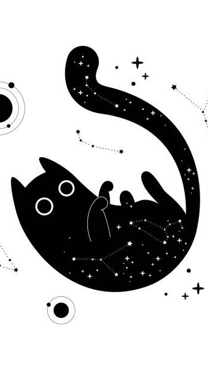
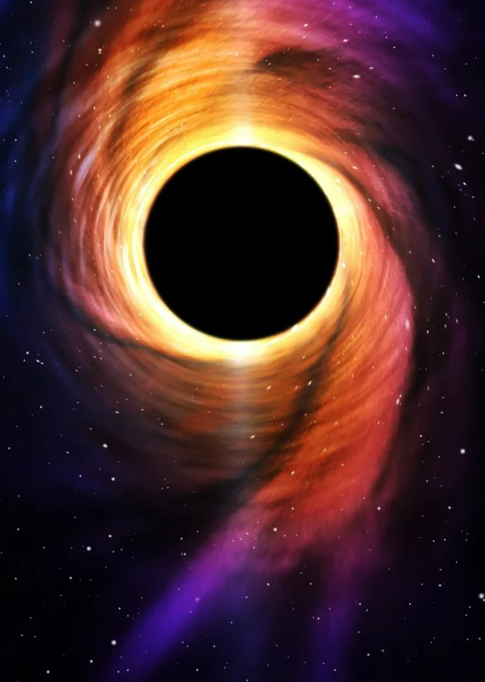
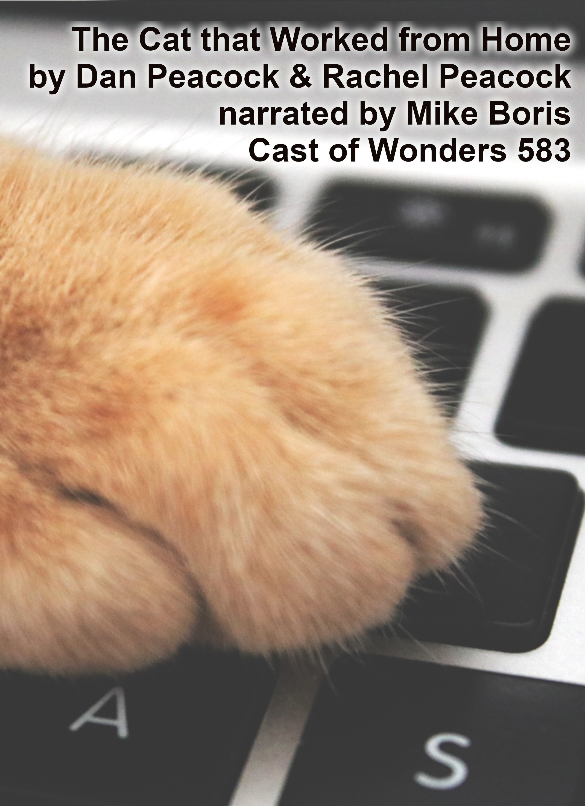
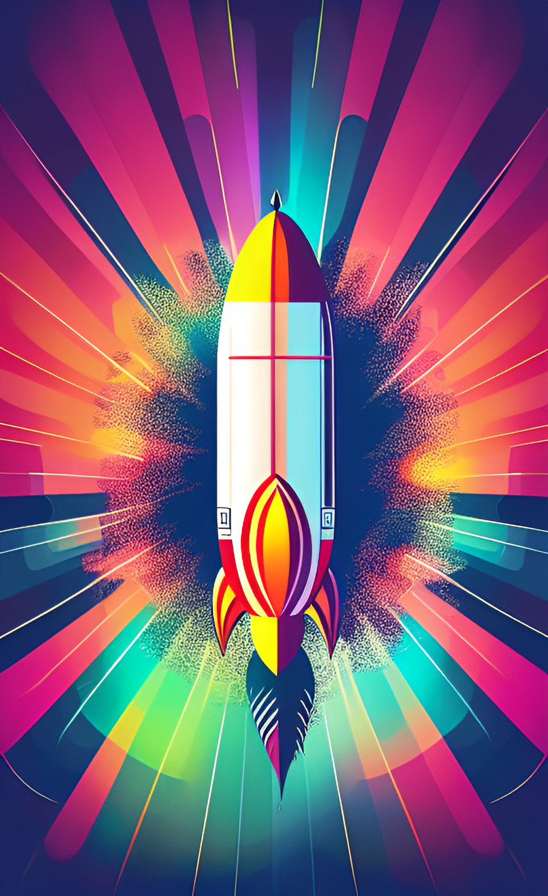
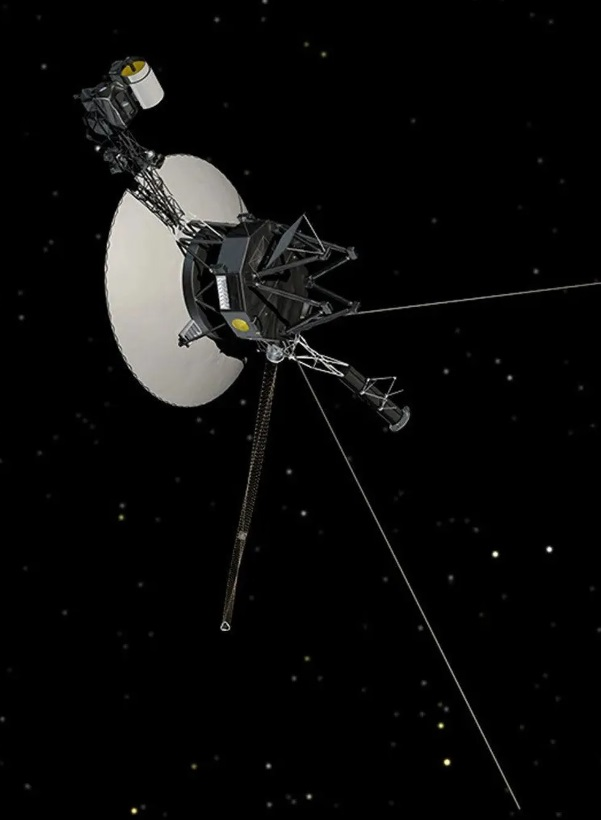

Take Flight
On a half-abandoned future Earth, an ornithologist discovers a critically endangered bird nesting beneath a spaceport launch pad.

The Cat That Went To Uranus
After stowing away aboard the first manned mission to Uranus, a little black cat quickly becomes a nuisance.

Ellipsism
When a spaceship captain falls into a supermassive black hole, her old crew come home to say a final goodbye.

The Cat That Worked From Home
Macaroni is a very important business cat. He has a little laptop with little buttons for his little paws.
 Generation
Generation
In a dystopian future, a desperate mother attempts to smuggle her illegal child past Border Enforcement.

Terminal Accord
A group of cancer-stricken astronauts embark on a one-way trip to Europa.
 Italic & Bold
Italic & Bold
Two damaged robots discuss matters of great importance.
 Bound
Bound
No-one can prepare you for living with your demons.
 The Smiling Virologist
The Smiling Virologist
A documentary crew uncovers the truth behind a very unusual pandemic.
 Eternity Park
Eternity Park
As the biosphere collapses, a young girl explores a pristine VR copy of Earth.
 What To Do When A Protagonist Visits Your Generic Village
What To Do When A Protagonist Visits Your Generic Village
You've heard this story before.
 The Ice Tunnel Closes
The Ice Tunnel Closes
A 100-word Antarctic horror story.
 For All The Worlds You'll Make
For All The Worlds You'll Make
A tale of childhood friendship in the final years of a dying Earth.
 They Came From Outer Space [Citation Needed]
They Came From Outer Space [Citation Needed]
Alien invaders are wiping out civilisation, but Wikipedia still needs updating...
 The Tidal Lock
The Tidal Lock
In a superheated future where the Earth has stopped turning, a water courier's truck breaks down in the desert.

Testament
An interstellar traveler uncovers clues about the past of a once-inhabited planet.